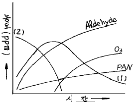
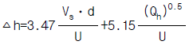
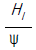
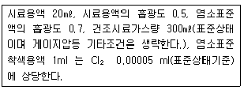

1과목: 대기오염 개론
1. 비스코스, 섬유공업에서 많이 발생하는 대기오염 물질로 순수한 액체는 상온에서 무색이고 햇빛에 파괴될 정도로 불안정하지만 부식성은 비교적 약하며 공기보다 2.64배 정도 무거운 것은?
2. 다음 그림은 자동차 배출가스를 Air Chamber에 넣고 자외선을 쪼였을 때 발생하는 각종 가스 성분의 농도 변화를 표시한 것이다. (1) 및 (2)에 넣어야 할 적당한 물질로 구성된 것은?

3. 다음의 대기오염 물질 중에 물에 가장 잘 녹는 것은?
4. 다음은 질소산화물(NOχ )에 대한 설명이다. 틀리는 것은?
5. 최근 대기오염 물질의 장거리 이동에 대한 많은 보고가 나오고 있어 대기오염 물질의 제어는 한 지역의 문제가 아니라 전 지구적인 감시와 조절이 절실히 요구되어지고 있다. 특히 매년 증가하고 있어 많은 문제를 안고 있는 CO2의 순환과정을 설명한 다음 내용 중 틀린 것은?(오류 신고가 접수된 문제입니다. 반드시 정답과 해설을 확인하시기 바랍니다.)
6. '코리올리(Coriolis)'의 힘에 관한 설명으로 틀린 것은?
7. 태양복사는 지면에 도달하기 전에 지구대기에 있는 여러 물질에 의해 흡수되거나 굴절, 산란되어 일사량의 감쇄를 초래하는데 대기중에 먼지나 입자의 직경이 전자파의 파장과 거의 같거나 큰 대기오염물질이 대기중에 많이 존재할 경우 하늘은 백색이나 뿌옇게 흐려져 일사량의 감소를 초래하며 간접적으로 대기오염도를 예측할 수 있다. 이와 같은 현상을 설명하는 용어로 가장 알맞는 것은?
8. 연기의 퍼지는 모양에서 가우시안 확산모델(Gaussian diffusion model)을 적용할 수 있는 가장 이상적인 형태의 연기는?
9. 불안정한 상태에서의 Moses와 Carson 의 plume rise 식은

이다. 연도가스의 열 방출열은 5000 KJ/s 이고 풍속 및 연도가스의 배출유속은 5 m/s, 15 m/s 이다. 연도 상부의 내경이 2m 일 때, 위 공식에 의한 plume rise(연기의 상승고)는?10. 리차드슨 수(Richardson number)에 관한 설명으로 알맞는 것은?
11. 시안화수소(HCN)의 1.0 V/V ppm에 해당하는 W/Wppm 값은? (단, 0℃,1기압,공기밀도 1.293kg/m3)
12. '지균풍'에 관한 설명으로 틀린 것은?
13. PSI(pollutants standard index) 지수가 150 일때 대기질 상태는?
14. 다음의 실내오염물질 중에서 건축자재에서 발생하는 오염 물질끼리 짝 지위진 것은?
15. 대기 안정도(stability)에 영향을 미치는 인자와 가장 거리가 먼 것은?
16. 유해화학물질의 생산, 저장, 수송중의 사고로 인해 일어나는 대기오염 재해지역과 원인물질이 바르지 않은 것은?
17. 0℃, 1기압하에서 SO2 20ppm은 몇 ㎎/Nm3인가?
18. 수용모델(receptor model)에 대한 설명과 가장 거리가 먼 것은?
19. 입자상물질의 농도가 200㎍/m3이고, 상대습도가 70%인 상태의 대도시에서의 가시거리는 몇 km인가? (단, A=1.3)
20. 다음 중 바람쏠림(wind shear)에 관한 설명으로 알맞지 않는 것은?
2과목: 연소공학
21. 프로판(C3H8)을 공기비 1.2로 연소할 때 저위 발열량은 2038.96 MJ/kmol이다. 이때의 단열온도는? (단, 공기와 메탄의 엔탈피는 무시하고 단열연소온도와 관계식은 t =

, Ψ = 0.027 [MJ/kg-K] 이다.)22. 유류버너중 저압공기분무식 버너에 관한 설명으로 알맞지 않는 것은?
23. 다음중 자기 착화온도가 가장 낮은 연료는?
24. 화학반응속도는 일반적으로 Arrhenius식으로 표현된다. 어떤 반응에서 화학반응상수가 27 oC일 때에 비하여 77 oC 일 때 3배가 되었다면 이 화학반응의 활성화에너지는?
25. 수소 12%, 수분 0.7%인 중유의 고위발열량이 7000kcal/kg일 때 저위발열량(kcal/kg)은?
26. 3%의 황이 함유된 중유를 매일 100㎘ 사용하는 보일러에 황함량 1.5%인 중유를 30% 섞어 사용할 때 배출되는 SO2 감소율(%)은? (단, 중유의 황성분은 모두 SO2로 전환, 중유비중 1.0으로 가정함 )
27. 1,200 K 이상으로 백열된 석탄 또는 코크스에 수증기를 반응시켜 얻는 기체연료로서 수소가 45-50%, 일산화탄소가 40-45% 포함되어 단열 화염온도가 매우 높은 연료는?
28. 프로판(C3H8)과 에탄(C2H6)의 혼합가스 1Nm3를 완전연소시킨 결과 배기가스중 탄산가스의 생성량이 2.3Nm3이었다면 혼합가스중의 프로판과 에탄의 mol비(프로판/에탄)는?
29. 프로판(C3H8)의 이론 건조 연소가스량(Sm3 /Sm3 -C3H8)은?
30. 일반적인 고체연료의 원소조정에 관한 설명으로 틀린것은?
31. 제조가스중 액화석유가스(LPG)에 관한 설명으로 가장 거리가 먼 것은?
32. 열생성 NO(Thermal NO)를 억제하는 연소방법에 관한 설명으로 알맞지 않은 것은?
33. 다음은 여러 가지 통풍방식에 대한 설명이다. 옳지 않은 것은?
34. 중유의 중량비가 탄소 87%, 수소 11%, 황 2%를 공기비 1.2로 완전연소시 습배가스중 아황산 가스의 배출농도 (ppm)는?
35. 일산화탄소(CO)의 완전연소시 (CO2)max(%)는?
36. 미분탄 연소에 관한 설명으로 알맞지 않은 것은?
37. 석탄의 유동층 연소방식에 관한 설명과 가장 거리가 먼 것은?
38. 최대탄산가스량[(CO2)max]에 대한 다음 설명중 옳지 않은 것은?
39. 고체연료 연소장치 중 연소과정이 미착화탄 → 산화층 → 환원층 → 회층으로 구성되며, 연료층을 항상 균일하게 제어할 수 있고, 저품질 연료도 스토우커를 적당히 선택할 경우에는 유효하게 연소시킬 수 있어 쓰레기 소각로에 많이 이용되는 화격자연소장치로 가장 적절한 것은?
40. CO를 공기비 1.2로 완전연소시킬 때 배출가스중의 산소 (%)는?
3과목: 대기오염 방지기술
41. Duct중의 배기 gas의 유속을 pitot관(pitot계수:1)으로 측정하였다. 동압의 측정을 위하여 내부에 비중 0.85의 toluene을 담고 있는 확대율 5배의 경사관 압력계(manometer)를 사용하였는데 동압은 경사관의 액주로 80㎜이었다. 이 경우 배기가스의 유속은? (단, 가스 밀도는 상온, 상압에서 1.2㎏/m3이었다.)
42. 어떤 집진장치의 입구와 출구에서 함진가스농도가 각각 10g/Sm3, 0.1g/Sm3이였고 그 중 입경범위 0 - 5 ㎛인 먼지의 질량분율이 각각 8%와 60% 였다면 이 집진장치에서 입경범위 0 - 5㎛인 먼지의 부분집진율(%)은?
43. 길이 5m, 높이 3m인 중력침강실을 사용하여 밀도 2g/cm3이고 점성도 2.0× 10-4g/cmㆍsec인 매연을 처리할 경우 완전 제거할 수 있는 먼지의 최소입경(㎛)은? (단, 가스유속은 0.75m/sec )
44. 처리가스량이 300m3/min이고 압력손실이 25cmH2O인 집진장치를 효율 90%인 송풍기로 운전할 때 소요되는 동력은?
45. 유체의 흐름에서 레이놀드(Reynolds)수와 관련이 가장 적은 항은?
46. NO 230ppm, NO2 23.0ppm을 함유한 배기가스 100,000Nm3/h를 NH3에 의해 선택적 접촉 환원법에서 처리할 경우 NOx를 제거하기 위한 NH3의 이론양은? (단, 반응에 산소는 고려하지 않음)
47. 배출되는 불소화합물 처리에 관한 설명으로 틀린 것은?
48. 유해가스의 흡수이론에 대한 설명 중 잘못된 것은?
49. 지금 실내에는 이산화탄소를 기준으로 시간당 0.5m3이 발생되고 있다. 이를 환기시키기 위한 청정공기의 양(m3/h)은? (단, 이산화탄소의 허용농도와 외기중 이산화탄소의 농도는 각각 0.1%와 0.03%이다)
50. 유해가스 제거를 위한 충전탑에 관한 설명과 가장 거리가 먼 것은?
51. HCl의 농도가 부피비로 0.5 %인 배출가스 2,500 m3/hr를 수산화칼슘(Ca(OH)2)으로 처리하고자 한다. 염화수소를 완전히 제거하기 위해 필요한 수산화칼슘량은? (단, Ca 원자량 40, 표준상태 기준 )
52. 악취물질의 성질과 발생원에 대한 설명 중 틀린 것은?
53. 전기집진장치에서 분진의 비저항을 조절하는 방법으로 잘못된 것은?
54. 유수식 세정집진장치의 종류와 가장 거리가 먼 것은?
55. 집진장치인 사이클론에 관한 설명으로 가장 거리가 먼 것은?
56. 전기집진장치에서 현재 집진효율이 90%인데, 집진면적을 두배로 늘리면 효율은 얼마가 되는가? (단, Deutsch-Anderson식 적용, 기타조건 변화없음)
57. 덕트 내에서의 기류의 흐름은 두점 사이의 압력차 때문이다. 관내 압력에 대한 설명중 바르지 못한 것은?
58. 흡착제의 종류 중 각종 방향족 유기용제, 할로겐화된 지방족 유기용제, 에스테르류, 알코올류 등의 비극성류의 유기용제를 흡착하는데 적합한 것은?
59. 커닝험 수정계수에 대한 설명으로 알맞는 것은?
60. 공기중에 CO2 가스의 부피가 5%를 넘으면 인체에 해롭다고 한다면 지금 300m3 되는 방에서 문을 닫고 80%의 탄소를 가진 숯을 몇 kg을 태우면 해로운 상태로 되겠는가?(단, 기존의 공기중 CO2 가스의 부피는 고려하지 않음, 실내에서 완전혼합, 표준상태 기준)
4과목: 대기오염 공정시험기준(방법)
61. 가스크로마토그래피 사용시, 이론단수가 1600의 분리관이 있다. 보유시간이 20분이면 피이크의 좌우 변곡점에서 접선이 자르는 바탕선의 길이는? (단, 기록지 이동속도는 5mm/min이고 이론단수는 모든 성분에 대하여 같다.)
62. 황화수소(H2S)의 측정법을 가장 옳게 설명한 것은?
63. 건조 배출가스의 유량을 계산하는데 필요치 않은 것은?(단, 굴뚝의 단면이 원형인 경우)
64. 디에틸디티오카바민산은을 클로로포름용액에 흡수시켜 생성되는 적자색 용액의 흡광도를 측정하여 정량하는 화합물은?
65. [ 시료중에 질소산화물을 ( )존재하에서 물에 흡수시켜 질산이온으로 만든다] 위의 내용은 아연 환원 나프틸에틸렌디아민법에 의한 질소 산화물 분석방법의 일부분이다. ( )안에 알맞는 내용은?
66. 배출가스중 다이옥신 및 퓨란류를 분석하기 위한 시약으로 적절치 못한 것은?
67. 굴뚝 배출가스중 황산화물 측정을 위한 시료흡수용 흡수액은?
68. 가스크로마토 그래피의 설치장소 및 전기관계에 관한 설명으로 알맞지 않은 것은?
69. 배출가스 중의 염소성분을 오르토톨리디법으로 분석한 결과 다음과 같은 결과를 얻었다. 배출가스 중의 염소농도는 얼마인가?

70. 단면이 원형인 굴뚝(직경 0.5m)에서 배출되는 먼지 측정 점수는?
71. 티오시안산 제이수은법으로 염화수소를 분석할 때 필요한 시약과 관계가 없는 것은?
72. 가스크로마토 그래프 분석에 사용하는 검출기 중 이황화탄소를 분석하는데 가장 적합한 검출기는?
73. 가스크로마토그래피의 분리관에 사용하는 분해형 충전물질중 고정상 액체의 조건이라 볼 수 없는 것은?
74. 하이볼륨 에어샘플러의 흡인 유량은 보통 어느 정도인가? (단, 무부하 기준)
75. 비분산 적외선 분석법에서, 측정성분이 흡수되는 적외선을 그 흡수파장에서 측정하는 방식은?
76. 배출가스중 CS2의 측정에 사용되는 흡수액은?
77. 다음 용어의 규정 중 잘못된 것은?
78. 흡광광도법에 관한 설명으로 틀린 것은?
79. 원자흡광광도법에 있어서 목적원소에 의한 흡광도 As와 표준원소에 의한 흡광도 AR와의 비를 구하고 As/AR값과 표준물질 농도와의 관계를 그래프에 작성하여 검량선을 만들어 시료중의 목적원소 농도를 구하는 것은?
80. 가스크로마토 그래피법을 적용하여 배출가스중 벤젠을 분석하는 방법과 거리가 먼 것은?
5과목: 대기환경관계법규
81. 비산먼지 발생사업을 하고자 하는 자는 비산먼지발생사업 신고서를 언제까지 시도지사에게 제출하여야 하는가?
82. 대기 자가측정기준에 대한 설명으로 틀린 것은?
83. 초과부과금 부과대상 오염물질이 아닌 것은?
84. 다음의 오염물질 중 대기환경기준이 설정되어 있지 않은 것은?
85. 고체연료 환산계수가 가장 적은 연료 또는 원료명은? (단, 단위는 kg )
86. 개선명령이행 확인을 위한 오염도를 검사하는 기관이 아닌 것은?
87. 자가측정에 관한 기록의 보존기간은 최종기재를 한 날로부터 기간은?
88. 배출시설의 변경신고 사항이 아닌 것은?
89. 자동차연료용첨가제의 종류와 가장 거리가 먼 것은?
90. 대기환경보전법에서 사용하는 용어의 정의가 틀린 것은?
91. 위임업무의 보고내용 중 보고 횟수가 다른 것은?
92. 환경관리인 등의 교육에 관한 설명으로 알맞는 것은?
93. 대기오염물질배출시설(공통시설) 기준으로 틀린 것은?
94. 대기배출시설을 설치 운영하는 사업장에 대하여 조업정지를 명하여야 하는 경우로써 그 조업정지가 주민의 생활기타 공익에 현저한 지장을 초래할 우려가 있다고 인정되는 경우 조업정지 처분에 갈음하여 과징금을 부과할 수 있다 이때 행정처분시 과징금의 부과금액 산정시 적용되지 않는 것은?
95. 악취 측정방법인 직접관능법의 악취강도가 5이상인 경우 공기희석관능법의 악취농도(희석배율)로 알맞게 나타낸 것은?(단, 배출구인 경우)
96. 기후, 생태계변화 유발물질과 가장 거리가 먼 것은?
97. 유황이 과다 함유된 연료 사용으로 인한 대기오염을 방지하기 위해 특히 필요하다고 인정되는 경우 환경부장관 또는 시도지사가 이 당해 연료에 대하여 취할 수 있는 조치로 가장 적절한 것은?
98. 일산화탄소(CO)의 환경기준으로 맞는 것은?
99. 자동차의 종류에 관한 내용으로 알맞지 않은 것은?
100. 환경관리인의 준수사항을 이행하지 아니한 자에 대한 벌칙기준으로 적절한 것은?